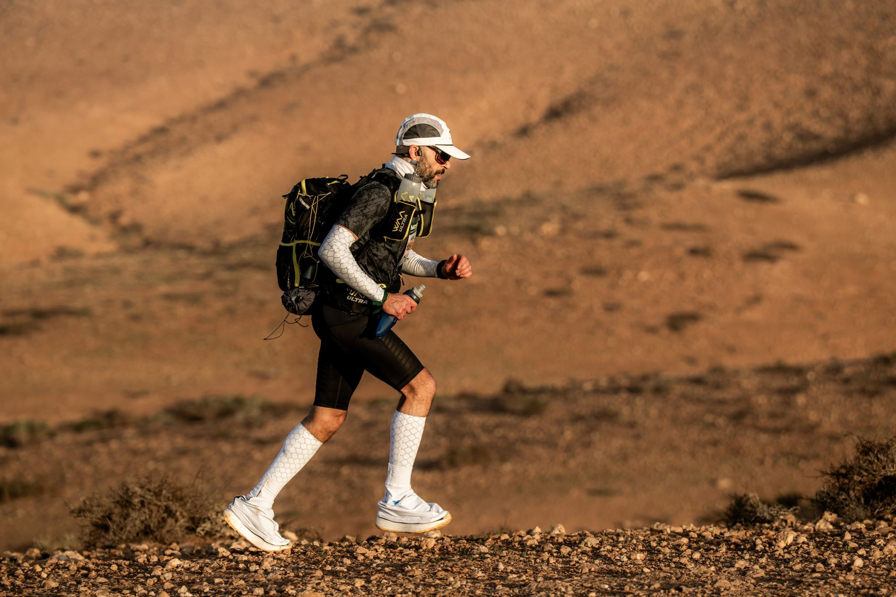
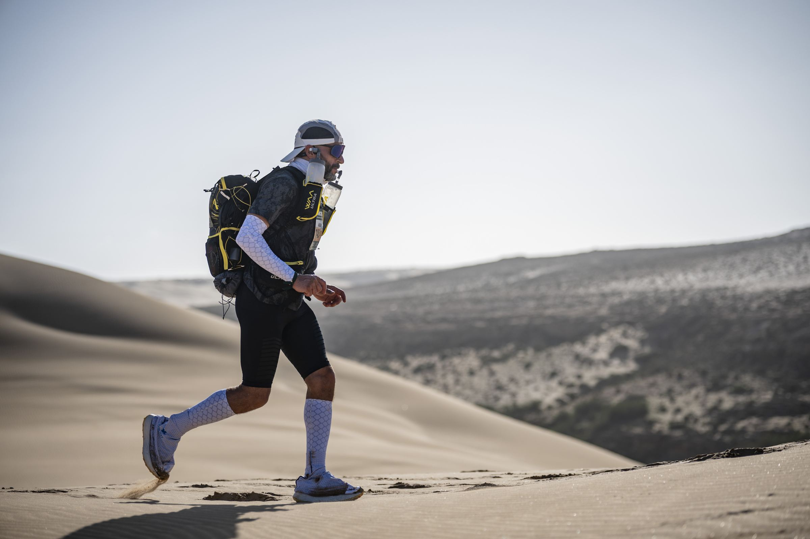

De loop
Elke dag een marathon, naar waar zijn verhaal begon
Van België naar de stad waar ik geboren werd
Niet om iets te bewijzen, zegt hij, maar om zijn afkomst eer aan te doen. Zijn toekomst ligt in België. Iran heeft hem gemaakt tot wie hij is.
5.000+kilometer
42km per dag
4–6maanden

© Marathon des SablesDe loop
Waarom hij loopt
De voorbereiding
Onderweg naar het vertrek
De route
Leuven → Iran
indicatieve route, etappes volgen na vertrek
Loop mee in je mailbox